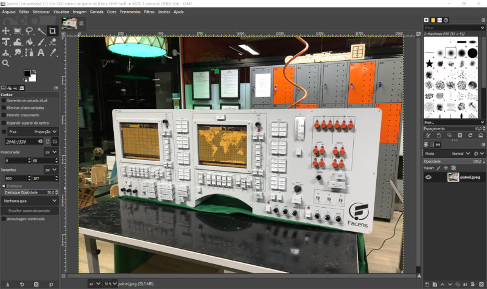
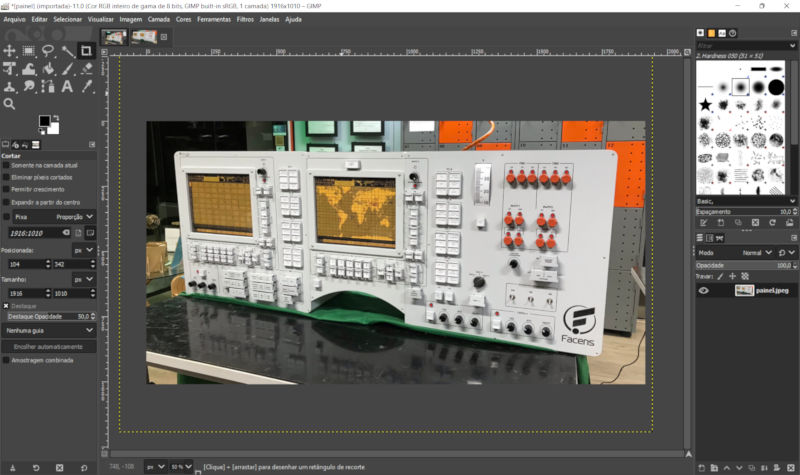
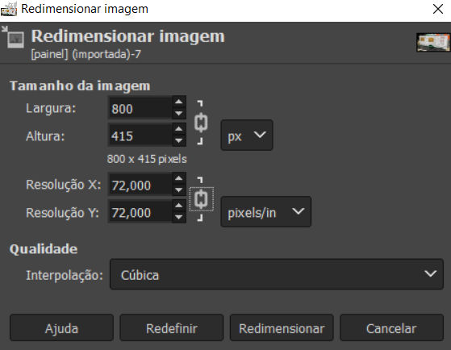
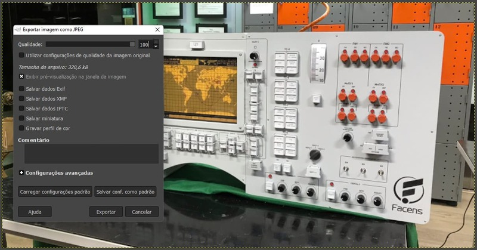
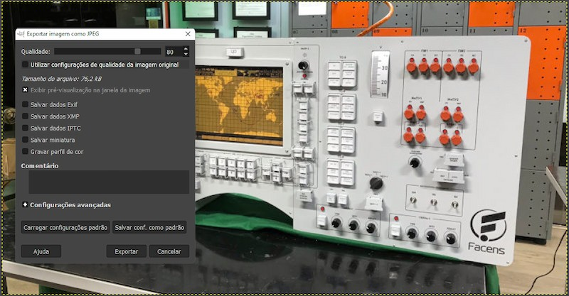

Como preparar imagens
- Tutorial feito por: Gustavo Abreu
- Local: Fab Lab Facens
- Licença: CC BY-SA
- Última atualização: 04/01/2023
- Última atualização por: Gustavo Abreu
Sumário
Você sabia que 1 segundo de espera para uma página carregar poderia custar 1.6 bilhões de dólares para a Amazon?
Ninguém gosta de ficar esperando. Por isso, é muito importante se preocupar com o peso das imagens que você irá incluir no seu material. Pense que com a qualidade das câmeras de hoje em dia, as fotos pesam facilmente 4MB. Em um tutorial não tão longo, é bem comum atingir dezenas de fotos. Sem tomar cuidado, a página pode demorar vários segundos para carregar. Sem contar o peso para guardar tudo isso no servidor.
Neste tutorial você irá aprender como otimizar as imagens para web usando o GIMP. Ele é um software de edição de imagens open-source, gratuito e cheio de recursos.
Existem também várias ferramentas online gratuitas que fazem isso com bastante facilidade. Como por exemplo o JPEG Optimizer ou Squoosh.
Recomendações
Formato
Prefira JPEG, ele permite uma melhor compressão sem perder tanto a qualidade. Utilize PNG apenas se fizer sentido usar o fundo da imagem transparente.
Vídeos e GIFs falamos no tutorial Como preparar vídeos e GIFs.
Dimensões
Este site está otimizado para manter o conteúdo em aproximadamente 800px de largura. Portanto, o ideal é nunca passar disso.
Exemplo:
Peso
A imagem acima pesa míseros 5KB. O ideal é nunca passar de 100kb, mantendo uma qualidade aceitável.
Veja no exemplo abaixo que na maioria das vezes a diferença de qualidade mal é percebível, mas o tamanho muda bastante:

Diretório e nome
Todas as pastas de tutoriais seguem a seguinte estrutura:
├── como_preparar_imagens.md
├── imagens
│ └── como_preparar_imagens
│ ├── 800x500.jpg
│ └── comparação.jpeg
Portanto, crie sempre uma pasta com o título do seu tutorial com as letras minúsculas e separados por underline.
Para o nome, tente mantê-lo sempre simples, sem espaços e facilmente identificável. Isso vai facilitar sua vida quando precisar apontar a imagem dentro do tutorial.
Para os demais arquivos e como incluí-los nos documentos, explicamos no tutorial de Como contribuir e Como escrever em markdown.
Otimizar imagens com o GIMP
Caso ainda não possua o GIMP, faça o download e siga os passos de instalação.
Passo 1: Abrir sua imagem
Abra sua imagem clicando em Arquivo > Abrir ou pelo atalho Ctrl-O.

Passo 2: Corte adequadamente
Tente sempre deixar apenas o que for relevante na imagem, bem centralizado.

Passo 3: Redimensionar
Abra o menu Imagem > Redimensionar
Mantendo o cadeado fechado, ao colocar a largura de até 800px, a altura automaticamente se ajusta.
A resolução padrão para telas é de 72 pixels por polegada.

Passo 4: Exportar
Clique em Arquivo > Exportar como e defina o diretório e o nome_do_arquivo.jpeg.
Ajuste a qualidade para 80%.
Desmarque todas as opções e clique em Salvar conf. como padrão. Isso só precisa ser feito uma vez.
Repare que não há diferença perceptível entre a qualidade 100% e 80%, mas o tamanho da imagem cai de 320kB para 76kB.
 
Pronto. Sua imagem está otimizada para ir para o site.